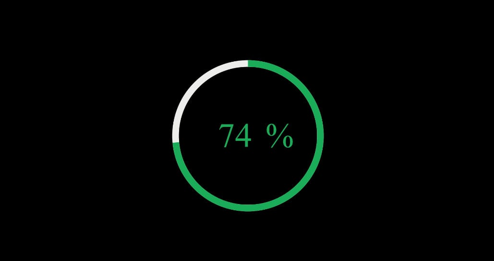

Loading Bar Animation: Complete Guide to Progress Indicators & UI Motion

Loading bar animations are essential UI elements that communicate system status to users. Well-designed loading animations improve user experience by reducing perceived wait time and adding a polished feel to applications and software demonstrations. When designed thoughtfully, a loading bar transforms a moment of waiting into a branded micro-interaction that reinforces product quality and attentiveness to detail.
The Role of Loading Animations in UX
The core purpose of a loading bar is to set user expectations. When users see a progress indicator, they understand that the system is working and can estimate how long they need to wait. Research in human-computer interaction consistently shows that users perceive shorter wait times when they see a visual progress indicator, even if the actual wait time remains unchanged. This psychological principle — uncertainty creates anxiety, while progress information reduces it — makes loading bars a critical component of user experience design.
Beyond mere functionality, loading bar animations offer a significant branding opportunity. Custom-designed loading screens with branded colors, logos, and animated elements create a memorable first impression. Companies like Apple, Google, and Microsoft invest heavily in their loading animations because they understand that these micro-interactions shape overall brand perception. For app developers and motion designers, investing in high-quality loading animations is an investment in user satisfaction and brand equity.
Types of Progress Indicators
Progress indicators fall into several distinct categories, each suited to different operational contexts and user expectations:
- Determinate Progress Bars — Show a specific percentage of completion when the system can estimate remaining time, such as file downloads and installations
- Indeterminate Indicators — Spinners, pulsing dots, and looping animations used when duration is unknown, common in login and sync processes
- Segmented Progress Bars — Break processes into distinct stages with labels for multi-step wizards and setup sequences
- Circular Progress Indicators — Ring-style loaders that fill progressively, ideal for mobile apps and dashboard interfaces
- Skeleton Screen Loaders — Placeholder animations that mimic actual content layout, popular in social media and content-heavy apps
Each type serves a specific purpose, and professional motion designers often combine multiple styles within a single project. The best loading animations align with the application's design language while providing clear, unambiguous progress feedback.
Design Principles for Loading Bar Animations
Creating effective loading bar animations requires attention to several design principles that enhance both aesthetics and functionality. The most successful loading animations balance visual appeal with clear communication:
Motion and Timing — The speed and easing of loading bar animations significantly impact user perception. Progress bars that move too quickly may not be noticed, while those that move too slowly can create frustration. Natural easing curves — where the bar starts slow, accelerates, and decelerates toward the end — feel more organic and reassuring. A typical determinate loading animation should complete in 3-10 seconds for optimal perceived performance.
Color and Branding — Loading bar colors should align with the brand palette while maintaining sufficient contrast for readability. Gradient fills, animated color shifts, and subtle glow effects can make loading bars more visually engaging without sacrificing clarity. Avoid red tones for loading bars outside of error states, as they can create unnecessary anxiety.
Feedback and Communication — The best loading bars provide additional context beyond a simple fill animation. Percentage indicators, status messages, and estimated time remaining help users understand what is happening. Text labels like "Preparing your file..." or "Almost there!" add a human touch to the loading experience.
| Loading Bar Specs | |
| Optimal Duration | 3-10 seconds for determinate loaders |
| Frame Rate | 30 fps minimum, 60 fps for premium feel |
| Resolution | 1920x1080 (HD) or asset-native size |
| Animation Codec | ProRes 4444 with alpha, Lottie JSON for web |
| Color Space | sRGB for web, Rec. 709 for broadcast |
| Accessibility | ARIA progressbar role with valuenow attributes |
After Effects Production Workflow
Adobe After Effects is the industry standard for creating professional loading bar animations. A systematic workflow ensures consistent quality across projects:
- Set up composition — Create a composition at your target resolution with 30fps and 10-15 second duration for a standard loading sequence
- Create bar shapes — Use the Rectangle Tool to draw background and fill layers. Name layers clearly for organization
- Animate with Trim Paths — Add Trim Paths to the fill shape, animate End from 0% to 100% with ease-out interpolation for natural deceleration
- Add visual polish — Apply gradient fills, drop shadows, and highlight sweeps using screen blend modes for depth
- Incorporate text labels — Link percentage text to Trim Paths value using expressions for automatic updates
- Include branding — Position logo above the loading bar with a fade-in animation that completes before the bar starts
- Export with alpha — Render with QuickTime Animation codec (RGB + Alpha) for compositing, or Lottie JSON for lightweight web delivery
By following this workflow, you can create professional loading bar animations that enhance user experience and strengthen brand identity. The key is balancing visual appeal with functional clarity — the loading bar should be beautiful enough to capture attention but clear enough to communicate progress instantly.
Platform-Specific Optimization
Each platform has unique requirements for loading bar animations. Understanding these constraints helps motion designers create assets that perform well across different contexts:
Mobile Apps (iOS and Android) — Native mobile platforms have specific design guidelines for loading indicators. iOS Human Interface Guidelines recommend standard activity indicators for simple loading states and custom progress views for determinate operations. Android Material Design provides detailed specifications for linear and circular progress indicators with standard animation curves. When designing loading bars for mobile apps, keep asset sizes under 500KB and use hardware-accelerated rendering paths.
Web Applications — Web loading animations should prioritize performance and accessibility. Use CSS animations for simple loading bars, as they are GPU-accelerated and require no JavaScript overhead. For complex animations, the Lottie format renders vector animations at a fraction of the file size of GIF or video equivalents. Ensure loading bars have proper ARIA attributes for screen reader compatibility.
Desktop Software — Desktop applications can afford higher-quality animations since performance constraints are less severe. However, loading animations should still be optimized to avoid slowing down the very process they display. Use lazy loading for animation assets and consider pre-caching them during installation.
Common Mistakes to Avoid
Even experienced motion designers can make mistakes when creating loading bar animations. Here are the most common pitfalls and how to avoid them:
- Inconsistent animation speed — A linear loading bar feels mechanical. Apply easing curves for natural acceleration and deceleration patterns
- Overly complex animations — Loading bars must remain clear and readable. Decorative effects should never obscure the progress information
- Ignoring indeterminate states — Always design an indeterminate state for operations where remaining time is unknown, preventing the embarrassment of a bar that reaches 99% and stalls
- Poor contrast and readability — Test animations against light and dark backgrounds to ensure sufficient contrast for visibility in all contexts
- Generic unbranded designs — Loading screens are often the first thing users see. Incorporate brand colors, typography, and logos to create a cohesive brand experience
Pros
- Reduces perceived wait time and improves user satisfaction
- Provides clear system status feedback to users
- Creates branding opportunities in micro-interactions
- Customizable across platforms and design systems
- Relatively simple to produce in After Effects
Cons
- Poorly designed loaders increase perceived wait time
- Complex animations can impact performance on low-end devices
- Determinate bars stall when progress estimation fails
- Over-designed animations distract from the loading purpose
- Accessibility requirements add implementation complexity
Verdict
Loading bar animations are an essential UI component that bridges the gap between system operation and user experience. When designed with attention to motion principles, platform constraints, and accessibility standards, they transform mandatory waiting periods into positive brand interactions. SPurno Animation Studio's loading bar templates offer professionally designed progress indicators optimized for various platforms, from mobile apps to broadcast graphics. Browse our collection to find the perfect loading animation for your next UI project.